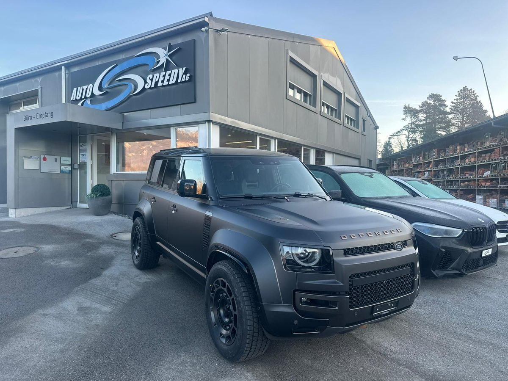

Das Team von Auto Speedy in Altstätten
Auto Speedy AG ist eine Aktiengesellschaft in Altstätten. Laut Handelsregister betreibt sie eine Carrosserie, Autospenglerei und Autolackiererei sowie Autohandel.

Wer arbeitet wo
Administration
- Shpejtim Pirku «Speedy»
- Geschäftsführer
- Lea Schlegel
- Annahme, HR-Assistentin
- Martyna Skweres
- Kauffrau EBA in Ausbildung
Carrosserie
- Arsim Selmani
- Teamleiter Carrosserie, Spengler für Hagel- und Dellendrücken
- Dragan Tejic
- Carrosserie-Spengler, Schweisstechniker
- Enes Rushiti
- Carrosserie-Spengler
Lackiererei
- Sheref Kamili
- Carrosserie-Lackierer
- Fabio Cezza
- Carrosserie-Lackierer
- Anna Meier
- Carrosserie-Lackiererin EFZ in Ausbildung
Aufbereitung und Finish
- Armend Nuhii
- Aufbereiter, Finisher
Fotos der Mitarbeitenden zeigen wir hier, sobald alle einverstanden sind.
Auto Speedy bildet Spengler und Lackierer aus
Laut Carrosserie Suisse ist Auto Speedy Ausbildungsbetrieb für Carrosseriespengler/-in EFZ und Carrosserielackierer/-in EFZ. Der Verband führt den Betrieb als «TOP-Ausbildungsbetrieb» und als Scheibenkonzept-Partner (Stand 1. November 2026). Eintrag lesen.
Welche Stellen offen sind, klären Sie am besten telefonisch.
Partner von Herstellern und Flotten
Auto Speedy nennt sich zertifizierter Partner für Karosserie und Lack von Tesla (Approved Body Shop), Land Rover, AMAG und Ayvens.
Nachweis des Betriebs offen
Schaden melden in zwei Angaben
Name und Telefon genügen. Ihr E-Mail-Programm öffnet die Meldung vorbereitet. Sie senden sie dort ab.